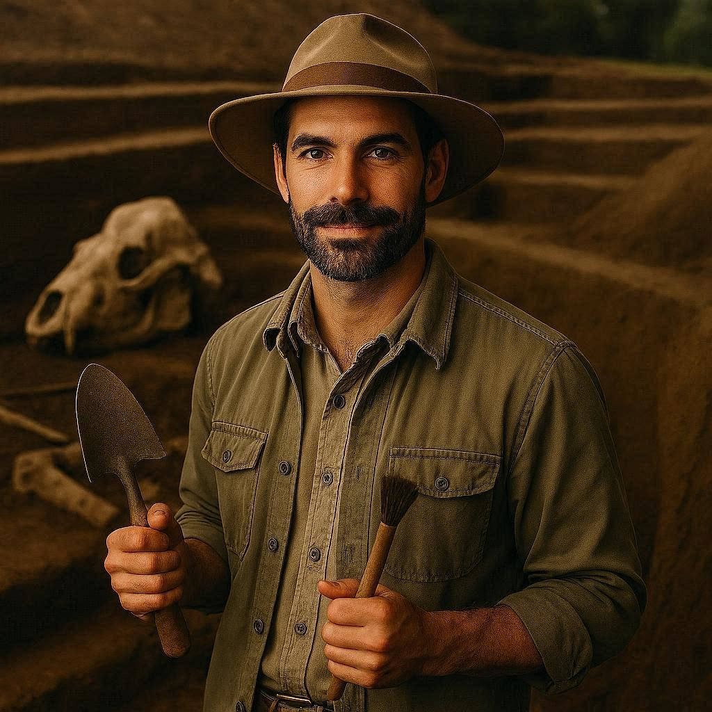
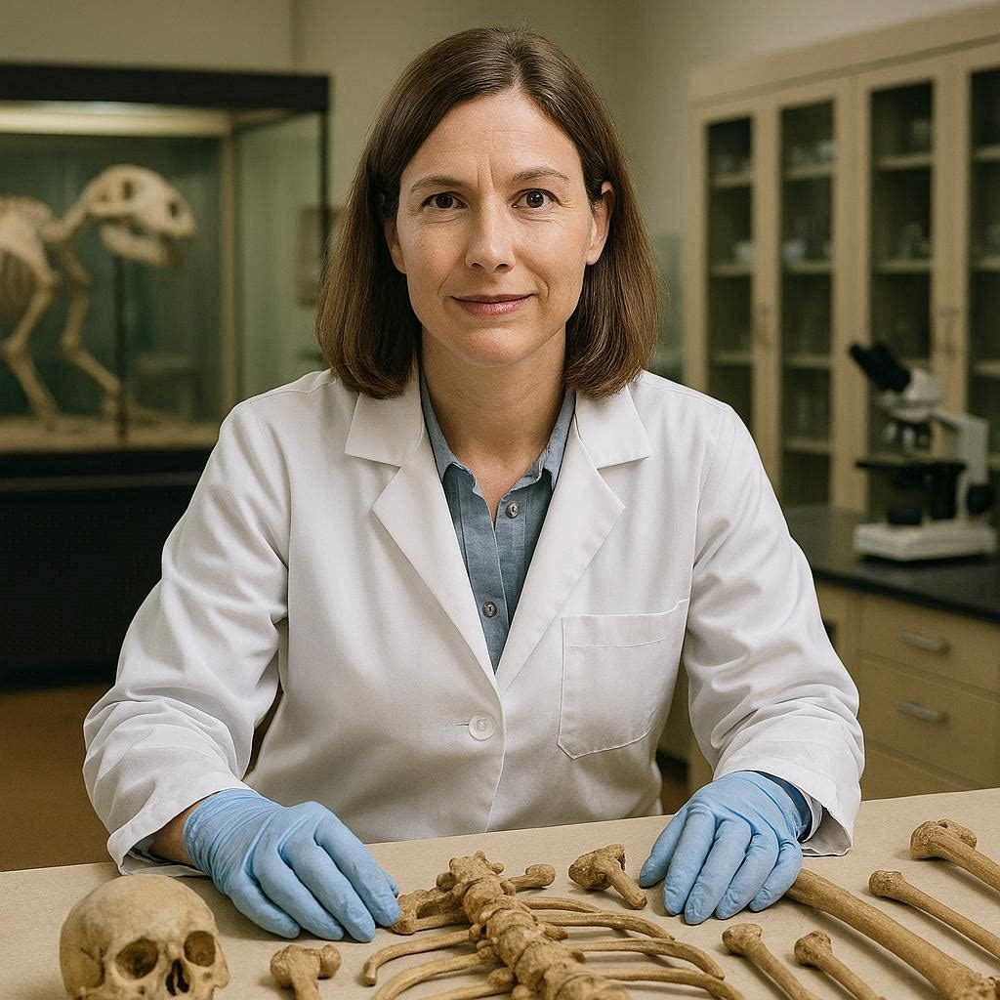
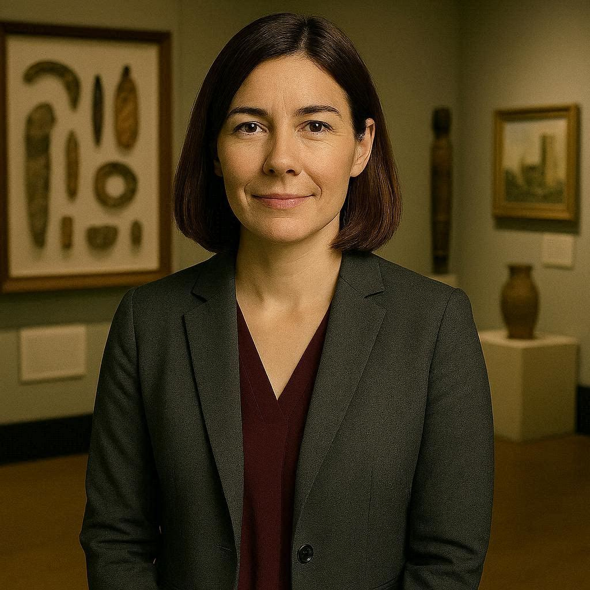

Dr. Rowan Calder
Subject Matter Expertise: Archaeologist
Professional Bio
Dr. Rowan Calder is a professional zooarchaeologist whose work centers on the excavation and interpretation of ancient animal sites across prehistoric landscapes. He earned his PhD in Archaeozoology from the University of Edinburgh, where he specialized in the use of remote-sensing technologies to locate long-buried faunal deposits. His field practice integrates drone-based mapping, LIDAR terrain modeling, and precision excavation tools to uncover and document fossil assemblages with minimal disturbance. Over two decades of research, he has identified several rare Pleistocene kill-sites, including a uniquely preserved mass-shed bison horn cache that reshaped understanding of herd behavior during glacial retreats. Dr. Calder is known for his systematic, data-driven approach, combining sediment analysis, taphonomic study, and digital reconstruction to interpret how ancient animals interacted with their environments. His work often bridges paleontology and archaeology, emphasizing how ecological pressures shaped the distribution and survival of extinct species. He has published extensively on innovative survey methods for locating faunal remains and continues to refine field strategies that make large-scale animal site documentation more efficient. At the museum, he contributes to research initiatives and helps design immersive exhibits that bring prehistoric ecosystems to life for visitors.
Museum Role
Leads large-scale field excavations of prehistoric animal sites across multiple continents. He oversees documentation, mapping, and curation of fossil collections for public display and research. Rowan also collaborates with exhibit designers to turn field findings into immersive, educational experiences. In addition, he supervises interns and volunteers in the field, ensuring best practices in fossil preservation and excavation techniques.
Special Accomplishments
Recognized for his innovative use of drone mapping and LIDAR technology in fossil excavation, allowing large prehistoric animal sites to be documented with minimal environmental disruption.

Dr. Marisol Rennick
Subject Matter Expertise: Anthropologist
Professional Bio
Dr. Marisol Rennick is a physical anthropologist specializing in the evolutionary history of extinct mammals and serves as a senior researcher at the Natural History Museum. She earned her PhD in Biological Anthropology from the University of Michigan, where her dissertation focused on post-cranial morphology in early Pleistocene carnivores. Her work involves detailed analysis of fossilized remains using high-resolution CT scanning, comparative microscopy, and ancient DNA sequencing to reconstruct behavior, diet, and lineage relationships. Over the past decade, she has led field and lab teams investigating Late Quaternary extinction sites, contributing to the discovery of a previously unknown dwarf camel species in the American Southwest. Dr. Rennick is known for her meticulous, interdisciplinary approach, often integrating digital modeling with traditional osteological methods to build comprehensive evolutionary profiles. She collaborates closely with geneticists, geologists, and conservation biologists to contextualize fossil evidence within broader ecological patterns. Her research has been featured in several peer-reviewed journals and continues to shape current understanding of mammalian adaptation during periods of rapid climate change. Outside of fieldwork, she mentors emerging scientists and helps design museum exhibits that make complex scientific stories accessible to the public.
Museum Role
Oversees the analysis and interpretation of fossilized mammalian remains, providing key insights into evolutionary history and species adaptation. She leads research teams in the lab and field, mentoring interns in osteological analysis, CT scanning, and DNA sequencing. Marisol collaborates with international paleontologists and archaeologists to contextualize fossil findings within larger ecological and climatic frameworks. She also contributes to the development of educational programs and museum exhibits that explain extinct species' life histories to the public.
Special Accomplishments
Discovered a previously unknown dwarf camel species and is known for combining fossil analysis with advanced DNA sequencing techniques.

Dr. Liora Halden
Subject Matter Expertise: Interpreter
Professional Bio
Dr. Liora Halden is a cultural historian whose work explores how ancient ecosystems, extinct animals, and early human-animal interactions are interpreted through material evidence. She earned her PhD in Environmental Humanities from the University of British Columbia, where she specialized in cross-disciplinary approaches to understanding past worlds. Her interpretive practice blends landscape history, material culture studies, and ecological anthropology to transform fossils, tools, and environmental artifacts into compelling narratives about long-vanished species and the cultures that encountered them. Dr. Halden has collaborated with museums across North America and Europe to develop exhibitions that connect scientific findings with broader cultural meaning. She often uses comparative storytelling, archival research, and visitor-centered design to help audiences grasp how ancient animals shaped—and were shaped by—the environments they inhabited. Her work is defined by a warm, accessible style that invites visitors to see each object as part of a larger story rather than an isolated specimen. She is especially passionate about helping people understand the emotional and cultural resonance behind the museum's collections, ensuring that every display sparks curiosity and connection. At the Natural History Museum, she works closely with scientists, educators, and designers to craft narratives that bring prehistoric worlds vividly to life.
Museum Role
Develops interpretive narratives that connect fossil discoveries, extinct ecosystems, and prehistoric human-animal interactions. Liora designs immersive exhibits, guided tours, and interactive educational programs to help visitors of all ages understand complex scientific concepts. She collaborates closely with researchers to ensure that narratives are scientifically accurate while remaining engaging and accessible. Liora also evaluates visitor feedback and adapts storytelling strategies to maximize curiosity and learning outcomes.
Special Accomplishments
Brings a storytelling-focused approach to interpretation, helping visitors emotionally connect with prehistoric ecosystems and extinct species.